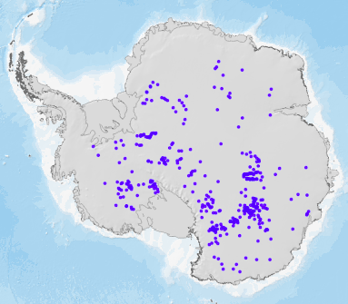
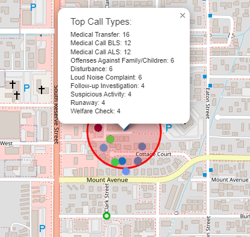
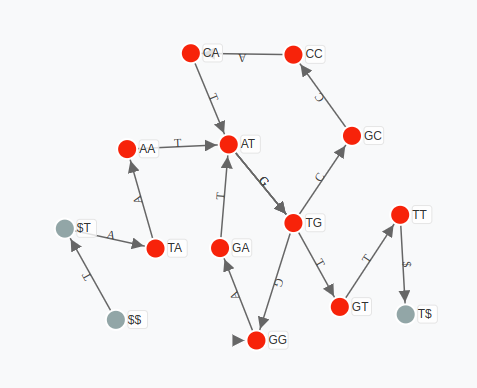
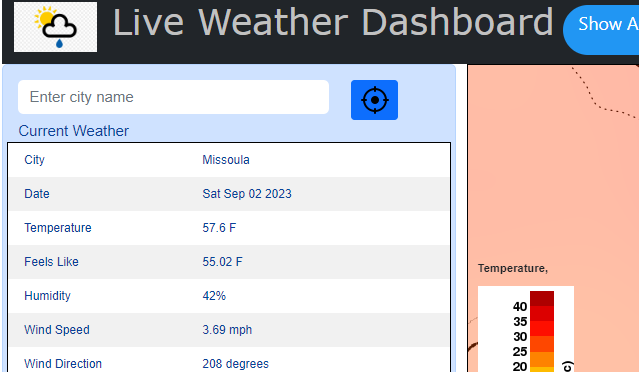
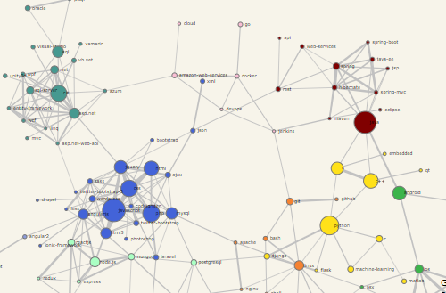
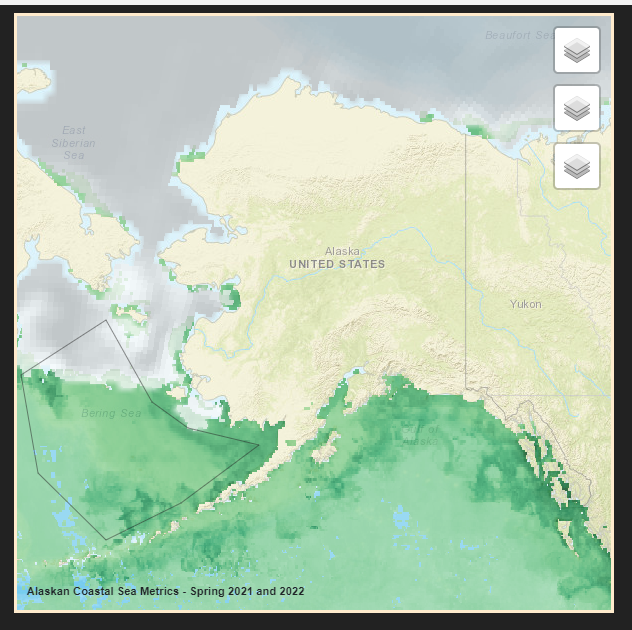
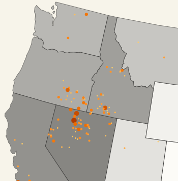
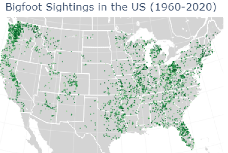

Research
My thesis, papers, and an award from my work on wildfire science.
-
Master’s thesis, 2026
Real-time immersive wildfire simulation: a game engine approach
Fast models that account for how a fire changes the wind around it, shown in 3D in a game engine for training and public communication.
Read on ScholarWorks
-
Award, 2025
Unreal Engine fire visualization
Winner of the SERDP/ESTCP Virtual Wildfire Modeling & Immersive Training Prize Challenge 2025.
Watch the video on YouTube
-
Journal paper, Fire (MDPI)
Investigating the impact of aerial firefighting on rate of wildfire spread
Using machine learning to measure how aerial suppression changes how fast a fire grows.
Read the paper
-
Preprint, arXiv
Improved wildfire spread prediction with time-series data and the WSTS+ benchmark
Time-series models for next-day fire spread, plus an expanded benchmark dataset.
Read on arXiv
-
Paper, ResearchGate
Predicting fire severity in Montana using a random forest classification scheme
A random forest classifier for burn severity across Montana fires.
Read on ResearchGate
Projects
Interactive maps, visualizations, and analyses. Most run right in the browser.
-

Antarctic subglacial lake prediction Machine learning -

Missoula 911 calls analysis Data analysis -

De Bruijn graph visualizer Bioinformatics -

Live weather dashboard Web app -

Stack Overflow tag network Network graph -

Alaskan snow crab study Geospatial -

Western wildfire explorer Interactive map -

Did smartphones kill Bigfoot? Data story
More code on GitHub.
Experience
-
2024 – 2026
Graduate researcher
University of Montana
Wildfire management and prevention research using machine learning. Real-world fuel visualization using 3D tools.
-
Summer 2023
Software consultant intern
ATG Cognizant
Worked with other interns on small internal projects and produced recommendations and deliverables for an external client. After the internship, the client hired me as an independent contractor to continue the project.
-
2022 – 2026
Research assistant
University of Montana
Part of a research team pairing machine learning with large-scale geospatial data operations using an in-house toolkit. I gather and clean data, build predictive models, and create visualizations.
-
2021 – 2022
Tech consultant
Geek Squad
Troubleshot and fixed a wide range of consumer electronics issues, and explained technical problems to clients in plain terms.
Education
-
Master of Science in Computer Science
University of Montana, August 2026
Research in machine learning for wildfire: fuel visualization, spread prediction, fire simulation, and more. Thesis: Real-time immersive wildfire simulation: a game engine approach.
-
Bachelor of Computer Science
University of Montana, 2024
Graduated magna cum laude with a minor in mathematics. Coursework in machine learning, statistics, web development, and database design.
-
Associate Degree in Computer Programming
Pittsburgh Technical College, 2019
3.9 GPA, Dean’s List all 8 quarters.
-
High school diploma
Frenchtown High School, 2014
National Honor Society, 3.8 GPA.
Get in touch
- University email
- jacob.bova@umontana.edu
- GitHub
- cake-dev